Expérience : Stage 2
Architecture d'entreprise
Présentation
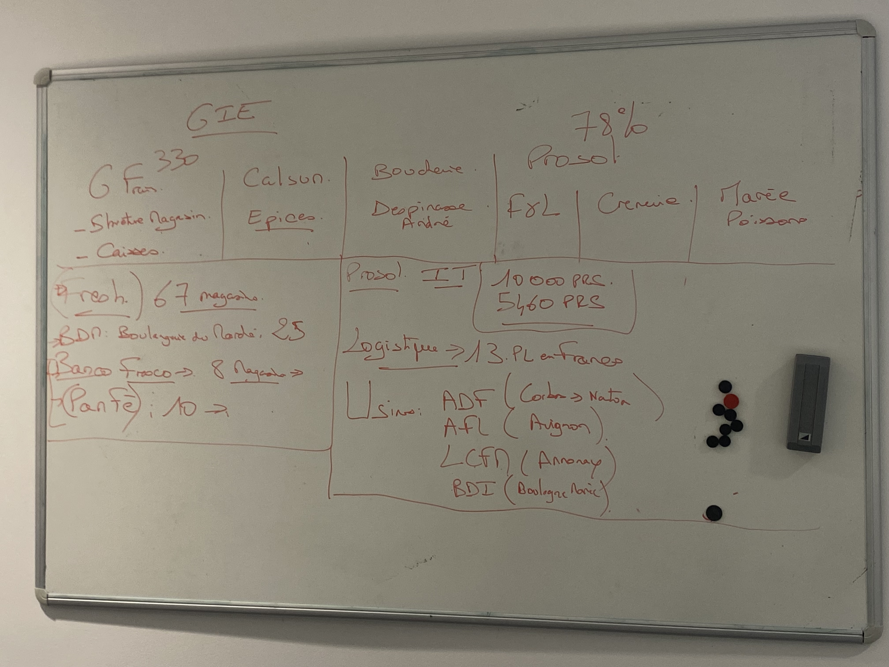
Prosol Architecture
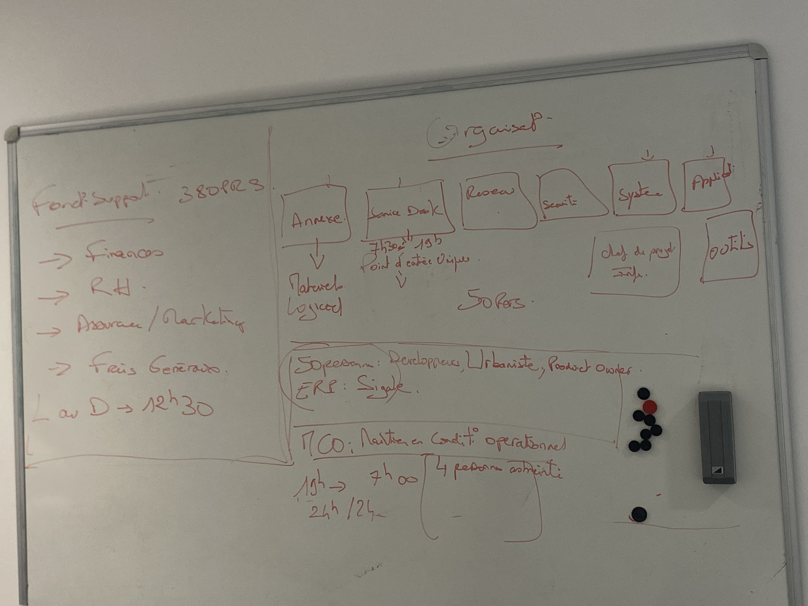
🏢 Vue d'ensemble – Organisation GIE
1️⃣ Activité & Périmètre Produits
- 🧺 Catégories gérées : Produits frais (GF 330), Shrink magasin, Caisses, Calson, Épices, Boudère, Dépannage.
- 🛒 Rayons : Fruits & Légumes (F&L), Crèmerie, Marée / Poissonnerie.
👉 Prosol (≈ 78 % de l’activité) est le cœur de l’activité, concentrant l’essentiel des flux, des volumes et des besoins IT/logistiques.
2️⃣ Réseau de Magasins
Total : 67 magasins
- BDD – Boulogne du Nord : 25
- Banco Fresco : 8
- PanF : 10
- Autres enseignes complétant le réseau
👉 Ce réseau alimente la majorité des flux frais, nécessitant une forte réactivité logistique et IT.
3️⃣ Volumes & Indicateurs
Prosol – IT : 10 000 PRC | 5 460 PRS
👉 Ces volumes expliquent :
- la criticité des systèmes
- la nécessité d’un MCO 24/7
- une organisation IT robuste et industrialisée
4️⃣ Logistique & Industriel
- 🚚 13 plateformes logistiques en France
- 🏭 Usines partenaires : ADF (Cabrès → Nantes), AFL (Avignon), LCFN (Annecy), BDI (Boulogne Nord)
👉 La logistique est multi-sites, avec des flux tendus, notamment sur les produits frais → dépendance forte à l’IT.
5️⃣ Fonctions Support
≈ 380 personnes (Amplitude horaire : de 4h à 12h30)
- Finance, Ressources Humaines
- Assurance / Marketing, Frais généraux
👉 Ces fonctions soutiennent l’ensemble du GIE, en lien direct avec la performance économique, la conformité et l’exploitation quotidienne.
6️⃣ Organisation IT
≈ 50 personnes (Horaires : 7h30 → 19h)
🧩 Domaines IT : Annexe, Maintenance logicielle, Socle Data, Réseau, Sécurité, Systèmes, Applicatif, Outils, Cloud & projets transverses.
👉 L’IT est structurée par expertises métiers et techniques, couvrant toute la chaîne de valeur (y compris la centralisation Data).
7️⃣ Équipes & Méthodes
- 👥 Rôles clés : Développeurs, Urbanistes SI, Product Owners
- ⚙️ ERP central : Sigale
👉 Le SI est orienté métier, au service des flux magasins, plateformes et usines.
8️⃣ Maintien en Condition (MCO)
- 🕒 Couverture : 24h/24 – 7j/7 (Organisation en 3×8)
- 🌙 Nuit : 19h → 7h (4 personnes en contrainte / astreinte)
👉 Indispensable pour :
- la continuité des ventes et gestion des stocks
- la logistique temps réel et production industrielle
Annexe
Tâches réalisées
Mon compte dans l'AD

Nouvel arrivant
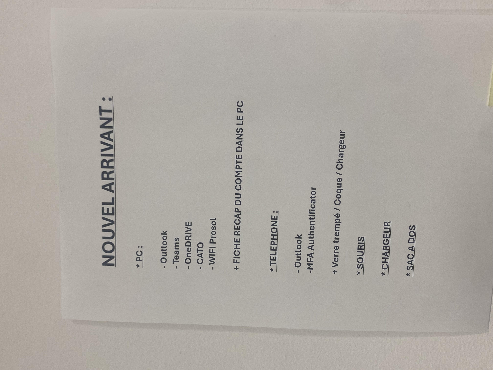
Masteriser un PC : Cela signifie préparer et configurer un ordinateur neuf (ou réinitialisé) en installant automatiquement le système d’exploitation (souvent Windows), les logiciels professionnels nécessaires, les paramètres de l’entreprise et les mises à jour.
Cela permet d’avoir un ordinateur prêt à être utilisé par un employé, avec :
- le système installé
- les applications nécessaires (Outlook, Teams, etc.)
- les paramètres réseau
- les règles de sécurité
- les droits d’accès
En entreprise, la masterisation se fait souvent à l’aide d’une image système standardisée pour que tous les PC soient configurés de la même manière.
Ordinateur italien
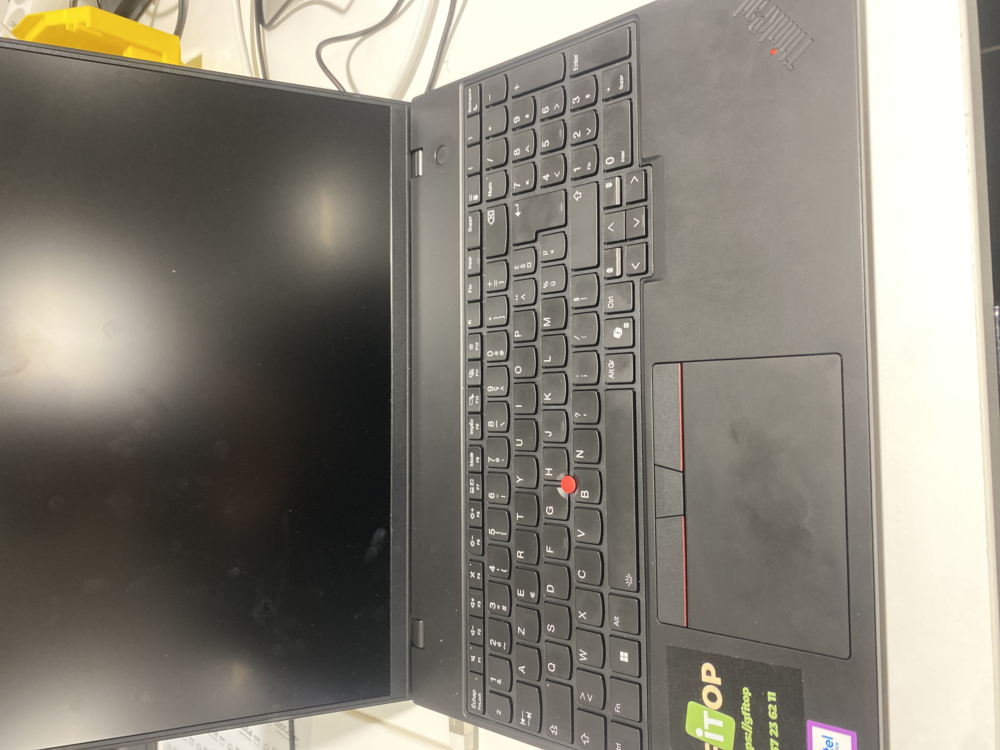
Zebra ZQ521
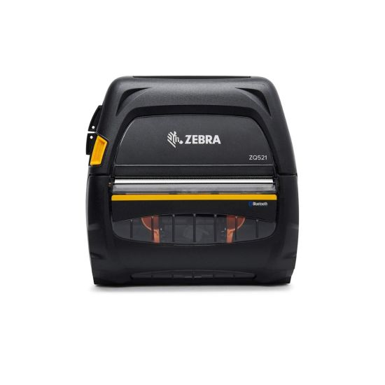
PDA Scanner
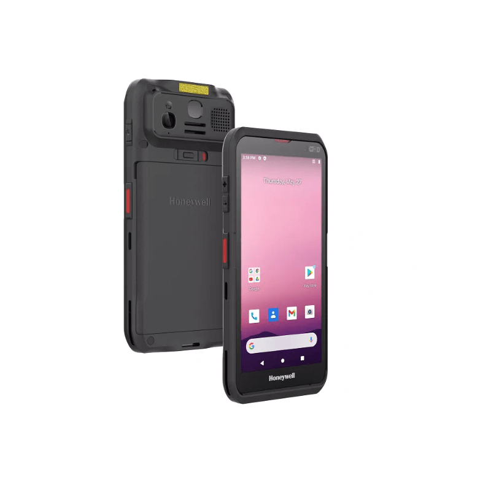
PDA (Personal Digital Assistant) : Terminal mobile intelligent utilisé en logistique et en magasin pour scanner les codes-barres, gérer les stocks en temps réel, préparer les commandes et assurer la traçabilité des produits.
Etat des switchs
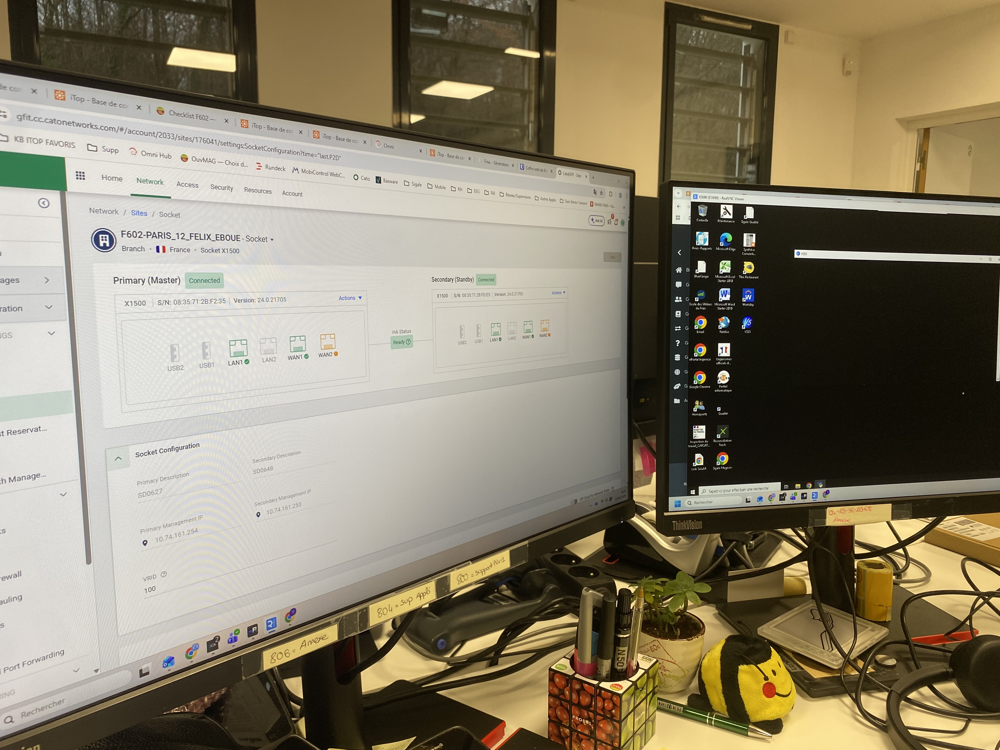
Branchement et config switch
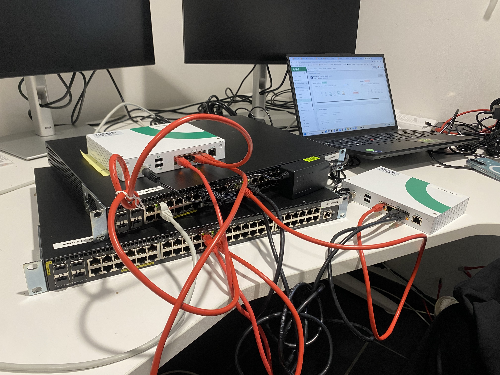
PC Portable Dell
Intervention
Imprimantes (Xerox)
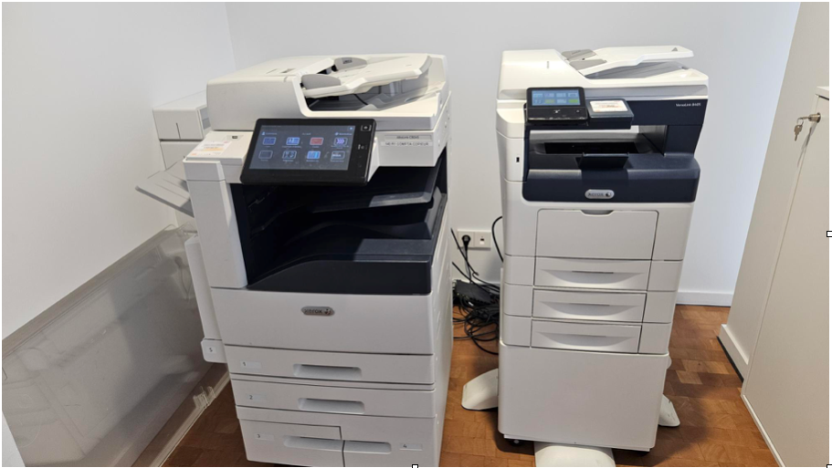
Écran Dell

Écran Supervision

Réseau et Sécurité
Applications vues
SIGALE
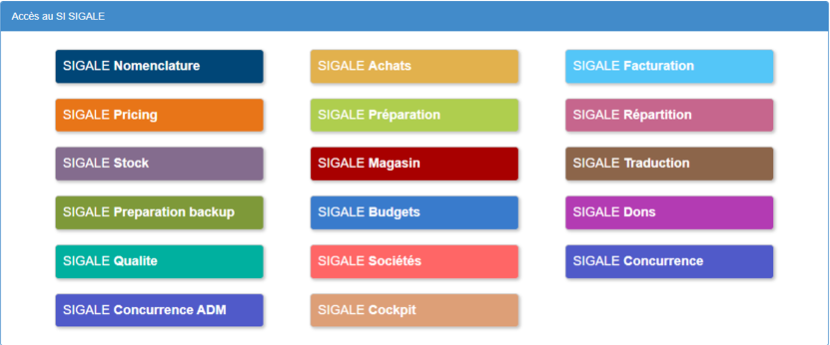
📦 SIGALE est le logiciel ERP (Enterprise Resource Planning ou Progiciel de Gestion Intégré) central utilisé par l'entreprise.
Qu'est-ce qu'un ERP ?
C'est un système
d'information qui centralise et gère l'activité quotidienne de l'entreprise (achats, gestion
des stocks, logistique, RH, etc.) autour d'une base de données unique.
🎯 Lien avec mes missions :
Dans mon
contexte, c'est l'outil métier au cœur de mon support matériel :
- Les PDA Scanners dialoguent avec l'ERP pour mettre à jour les stocks en temps réel lors des flashages.
- Les imprimantes thermiques Zebra reçoivent les ordres de l'ERP pour éditer les étiquettes de traçabilité.
- Les PC et écrans de supervision permettent aux collaborateurs et managers de piloter les flux logistiques sur SIGALE.
GFITOP
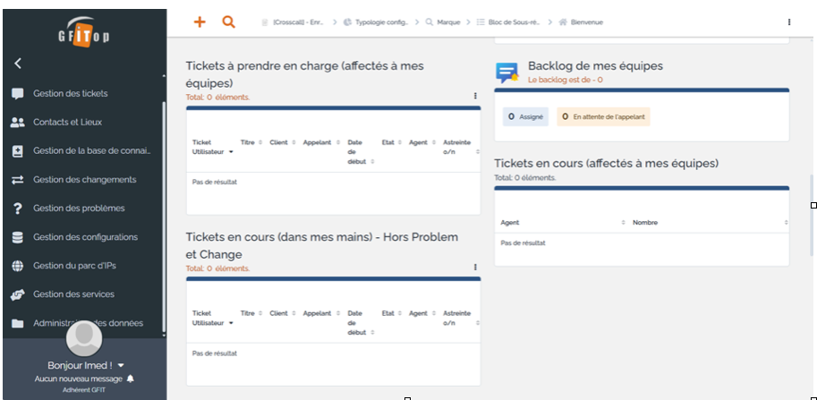
iTOP est une application de gestion des tickets et services informatiques (ITSM / Helpdesk) utilisée en entreprise.
🌐 Fonctionnalités Réseau
- Gestion des adresses IP (IPv4 / IPv6)
- Gestion des blocs et sous-réseaux (IPAM)
- Suivi de l’utilisation des plages IP
- Gestion des équipements réseau (switch, routeur, firewall, serveurs)
- Inventaire automatique (SNMP, scan réseau)
- Gestion des changements (modifications réseau tracées)
🔐 Fonctionnalités Cybersécurité
- Gestion des incidents de sécurité (tickets)
- Traçabilité et audit des actions
- Gestion des droits et rôles utilisateurs
- Suivi des vulnérabilités (via plugins)
- Documentation des procédures de sécurité
- Historique des configurations et changements
🎯 Objectif : Centraliser la gestion des actifs IT, améliorer la traçabilité, renforcer la gouvernance réseau et la conformité sécurité.
Password Manager
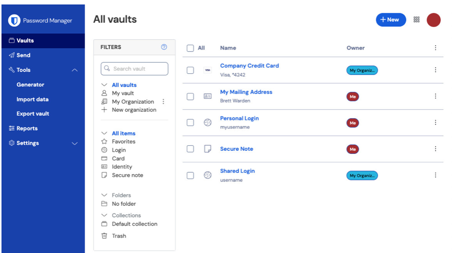
Bitwarden est un gestionnaire de mots de passe (password manager). Il permet de stocker, générer et remplir automatiquement tes mots de passe de manière sécurisée.
Au lieu de retenir 50 mots de passe, tu n’en gardes qu’un seul
:
👉 le mot de passe maître
🛠️ À quoi ça sert concrètement ?
Avec
Bitwarden, tu peux :
- 🔑 Enregistrer tous tes mots de passe (sites web, applis)
- ⚡ Remplir automatiquement les formulaires
- 🔐 Générer des mots de passe forts et uniques
- 💳 Stocker des cartes bancaires
- 🪪 Enregistrer des notes sécurisées (documents, infos sensibles)
- 👥 Partager des accès en sécurité (famille / équipe)
🔒 Sécurité : pourquoi c’est fiable ?
Voici
les points importants :
- 🧠 Chiffrement de bout en bout (end-to-end encryption) → Même Bitwarden ne peut pas voir tes données.
- 🔑 Chiffrement AES-256 (standard militaire)
- 🔐 Support de la double authentification (2FA)
- 🌍 Open-source (le code est public et vérifiable)
- ☁️ Synchronisation entre tous tes appareils
Cybereason EPP
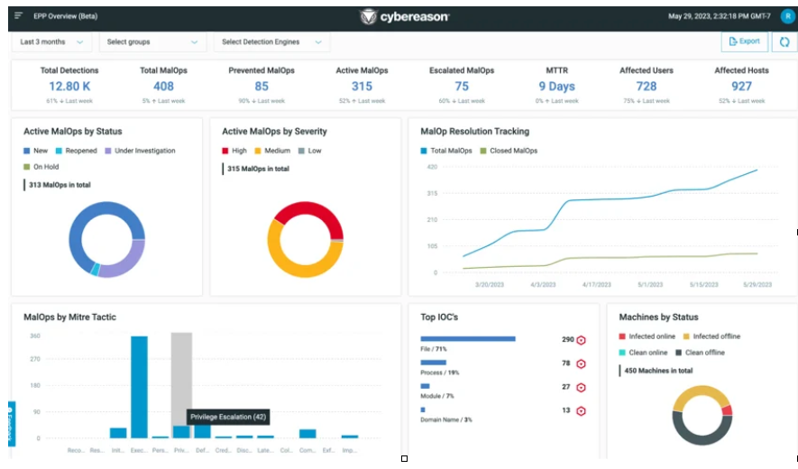
Cybereason est une plateforme professionnelle de cybersécurité utilisée par les entreprises pour détecter et stopper les cyberattaques.
👉 Elle protège les ordinateurs, serveurs et réseaux contre : Virus, Ransomwares, Hackers, Attaques avancées (APT), Intrusions internes.
Comment ça marche ?
- 1️⃣ Installation d’un agent : Un petit programme est installé sur chaque ordinateur de l’entreprise.
- 2️⃣ Surveillance continue : L’agent analyse les processus, fichiers, activités réseau et comportements suspects.
- 3️⃣ Intelligence artificielle : Cybereason utilise le machine learning, l'analyse comportementale et la corrélation d’événements.
- 4️⃣ Détection d’attaques : Par exemple, si un employé clique sur un email piégé et qu'un logiciel malveillant s’installe et essaie de se propager, Cybereason détecte la chaîne complète de l’attaque.
🚨 Que fait la plateforme quand elle détecte une menace
?
Elle peut : 🛑 Bloquer le programme, 🔒 Isoler un ordinateur du réseau, 🧹
Supprimer le malware, 📊 Générer un rapport détaillé, 👨💻 Alerter l’équipe sécurité.
PowerShell
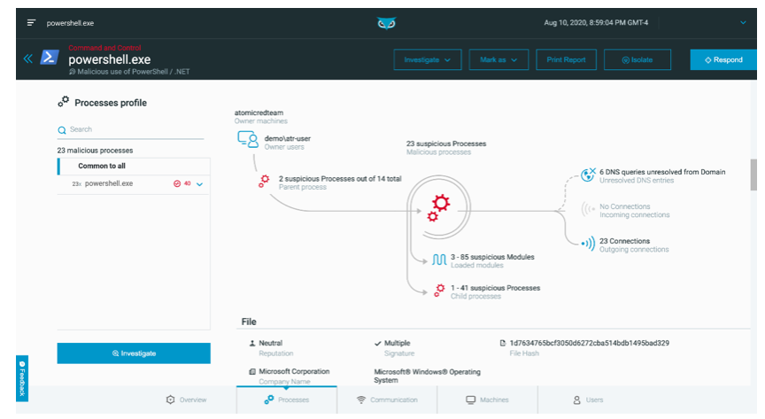
🛡️ C’est quoi un SOC en cybersécurité ?
🎯 SOC = Security Operations Center
Un SOC est une équipe spécialisée qui
surveille et défend le système informatique d’une entreprise 24h/24.
👉 C’est le centre
de surveillance contre les cyberattaques.
🧠 Que fait un SOC concrètement ?
Les
analystes SOC :
- 👀 Surveillent les alertes de sécurité
- 🔎 Analysent les comportements suspects
- 🚨 Détectent les attaques
- 🛑 Isolent les machines infectées
- 🧹 Coordonnent la réponse à incident
- 📊 Rédigent des rapports
🔗 Lien direct avec Cybereason
🛠️ Cybereason
est un outil utilisé par le SOC.
👉 Le SOC = les humains
👉 Cybereason = l’outil
technologique
Exemple concret :
- Un malware s’installe sur un PC (ex: via PowerShell).
- Cybereason détecte un comportement anormal.
- Une alerte apparaît dans le tableau de bord.
- L’analyste SOC analyse l’attaque.
- Il décide d’isoler le poste et lance la remédiation.
Donc : 🔎 Cybereason détecte, 🧠 Le SOC décide, 🛑 Le SOC agit.
Microsoft 365
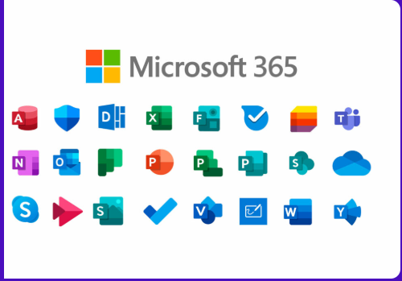
☁️ Microsoft 365 (anciennement Office 365) est une suite cloud de productivité et de collaboration. Elle combine applications Office, messagerie professionnelle, stockage cloud, sécurité et administration centralisée.
- 📧 Outlook : Messagerie professionnelle et calendrier.
- 💬 Teams : Messagerie instantanée, visioconférence, partage de fichiers.
- 📂 SharePoint : Intranet et gestion documentaire collaborative.
- ☁️ OneDrive : Stockage cloud individuel sécurisé.
- 📄 Suite Office : Word, Excel, PowerPoint (web + desktop).
🏢 Fonctionnement global (SaaS) :
Hébergement
des données dans les datacenters Microsoft, accès web/app, synchronisation multi-appareils,
gestion via Microsoft Admin Center.
🔐 Sécurité globale Microsoft 365 :
Gestion
des identités (Azure AD), MFA, RBAC, DLP, Audit logs, accès conditionnel et chiffrement des
données.
Cegid
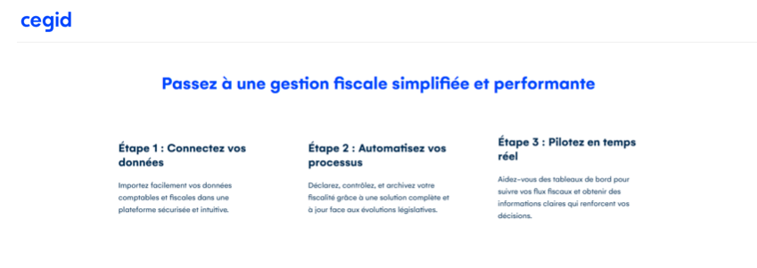
💼 Cegid Notilus – Gestion des frais & déplacements
Cegid Notilus est une
solution SaaS de gestion des voyages d’affaires et des notes de frais.
🧾 Fonctionnalités principales :
- Saisie et dématérialisation des notes de frais
- Scan automatique des justificatifs
- Workflow de validation (manager / finance)
- Intégration cartes bancaires professionnelles
- Réservation de voyages (vol, train, hôtel)
- Reporting et export comptable (ERP)
🔐 Sécurité & conformité :
Gestion des droits
utilisateurs, traçabilité des actions, respect des politiques internes, archivage conforme
aux obligations fiscales.
🎯 Objectif : Automatiser la gestion des dépenses professionnelles, réduire les erreurs et garantir la conformité financière.
CATO Networks
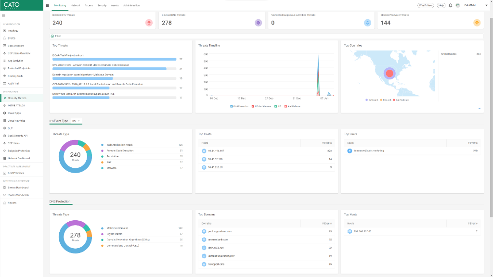
Cato Networks est une plateforme de sécurité et réseau en mode SASE (Secure Access Service Edge). Elle combine réseau WAN + cybersécurité dans le cloud.
🎯 Objectif : Remplacer les MPLS/VPN, sécuriser le trafic Internet, protéger les utilisateurs distants et simplifier l’architecture IT.
🌐 Fonctionnalités Réseau :
- 🔹 SD-WAN : Connexion multi-sites, gestion des liens (fibre, 4G...).
- 🔹 Backbone Cloud Privé : Réseau mondial optimisé.
- 🔹 Accès distant sécurisé (ZTNA) : Remplace les VPN classiques.
🔐 Fonctionnalités Cybersécurité :
- 🔹 FWaaS / SWG : Firewall cloud et filtrage web.
- 🔹 CASB / IPS : Contrôle SaaS et prévention d'intrusions.
- 🔹 Anti-malware & DLP : Protection avancée et anti-fuite de données.
Microsoft Exchange
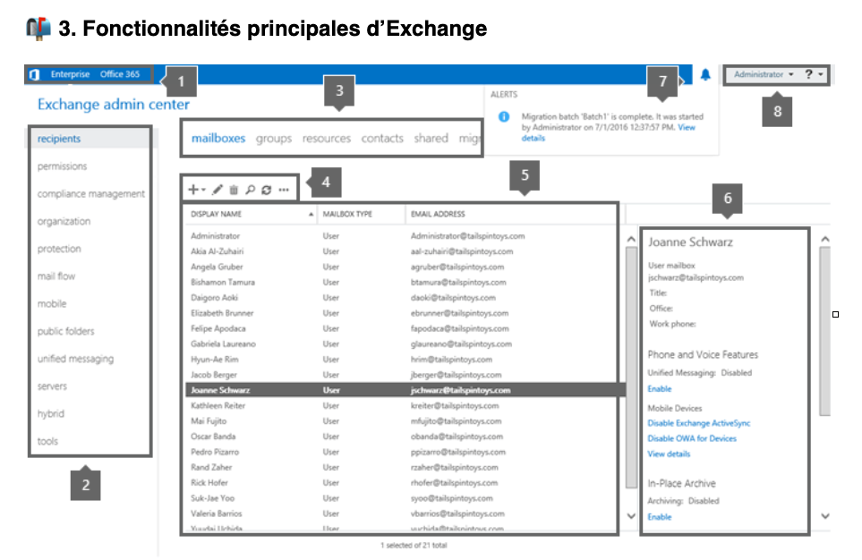
📧 Exchange Online est le serveur de messagerie cloud intégré à Microsoft 365 (qui remplace les serveurs locaux).
Fonctionnalités principales :
- 📧 Gestion des boîtes mail : Boîtes partagées, listes dynamiques, alias.
- 📅 Calendrier collaboratif : Partage, réservation de salles.
- 🔐 Sécurité & Protection : Anti-spam, anti-phishing, chiffrement.
- 📁 Archivage & conformité : Rétention légale (eDiscovery).
- 🔄 Synchronisation : Azure AD et clients lourds / mobiles.
Microsoft Outlook
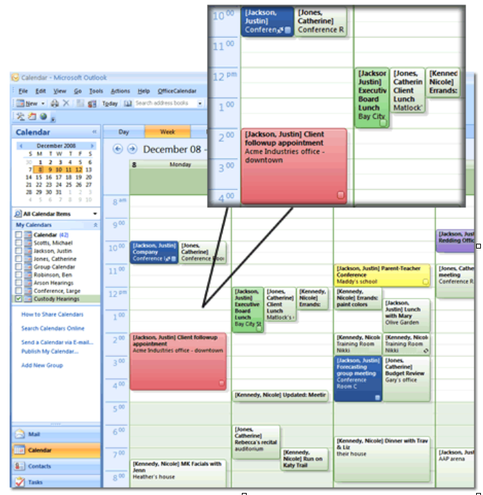
Microsoft Outlook est le client de messagerie utilisé pour accéder à Microsoft Exchange ou Microsoft 365.
Connecté nativement à Exchange, il permet la gestion des e-mails, du calendrier, des contacts, et s'intègre avec tout l'écosystème entreprise :
- Centralisation de la communication interne
- Visualisation des disponibilités des collègues
- Gestion des dossiers et réunions d'équipe directement depuis son poste
Workday (ERP SIRH)
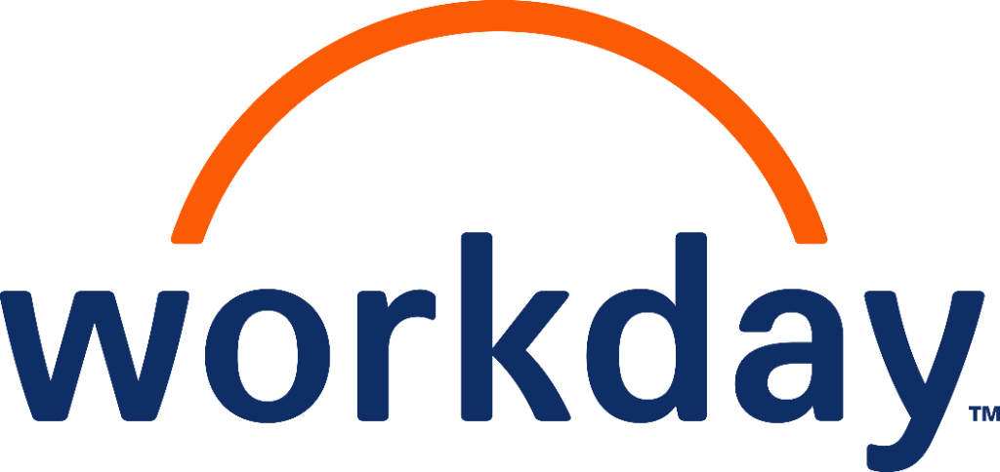
☁️ Workday est une plateforme cloud de gestion d'entreprise (Enterprise Management Cloud) spécialisée dans les Ressources Humaines (SIRH / HCM) et la gestion financière.
Contrairement à un ERP traditionnel, c'est un système unifié en mode SaaS qui centralise toutes les données collaborateurs. Ses fonctionnalités principales :
- Gestion du Capital Humain (HCM) : Recrutement, intégration et suivi des talents.
- Gestion administrative et paie : Centralisation des données, congés, absences et notes de frais.
- Portail employé (Self-service Cloud) : Permet aux salariés de consulter leurs fiches de paie, poser leurs congés et gérer leurs informations personnelles en toute autonomie.
Application Omni
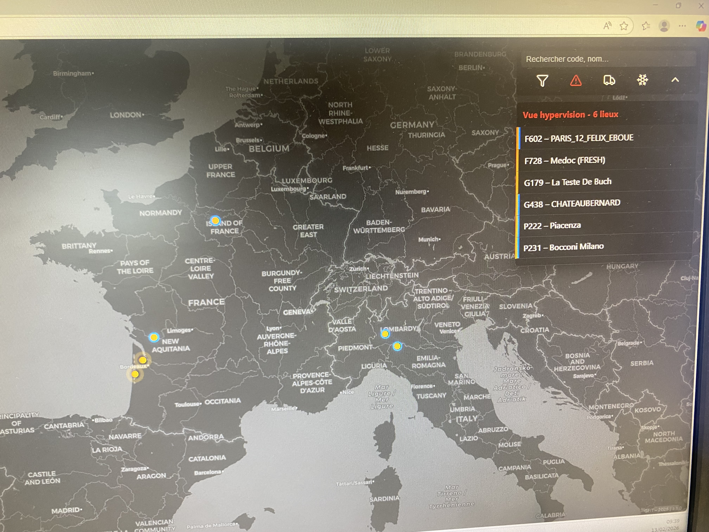
🌍 Application Omni est une plateforme de supervision centralisée (Hypervision) utilisée pour monitorer l'état du parc informatique et logistique en temps réel.
C'est un outil essentiel qui me permettait d'avoir une vue globale sur le fonctionnement de l'infrastructure de l'entreprise :
- Détection des pannes : Suivi de l'état des équipements informatiques dans les différents magasins pour identifier et résoudre rapidement les incidents.
- Suivi des opérations : Visualisation des différentes livraisons effectuées ou en cours de traitement.
- Cartographie globale : Vue d'ensemble sur une carte interactive couvrant l'intégralité du réseau de magasins, que ce soit en France ou sur les pays à l'international.
Activité réalisée
Active Directory & Contrôle d'exploitation
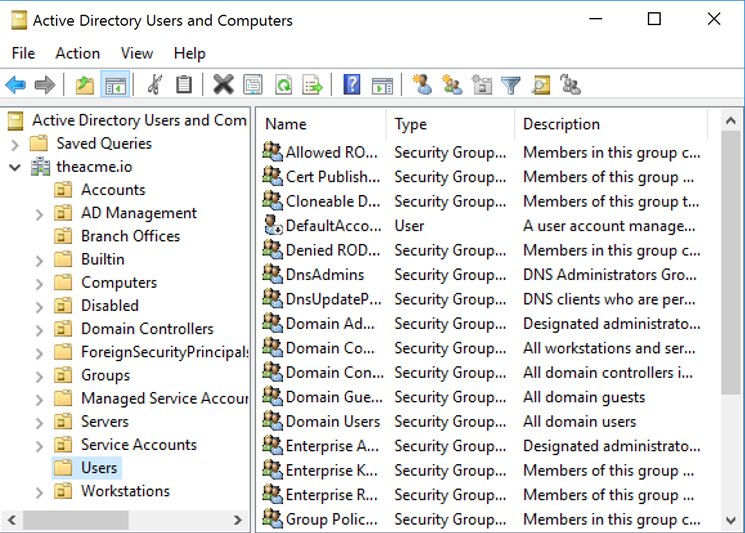
- Active Directory : Créer un utilisateur dans l’AD.
- Contrôle d'exploitation : Réguler les comptes AD pour que leur matricule ressorte correctement.
Workday (Mot de passe)
Mdp workday : Réinitialiser le mot de passe Workday suite à la demande d’un utilisateur.
Microsoft Exchange
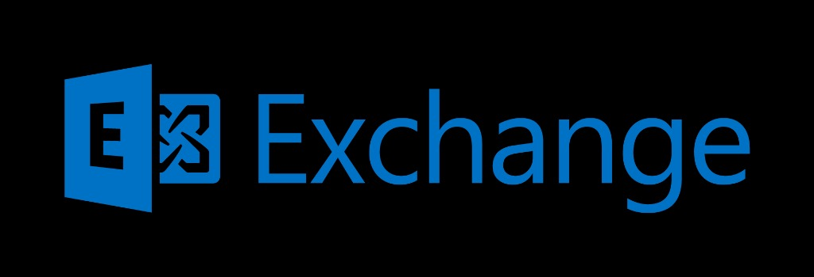
Exchange : Ajout de personnes dans une salle de réunion pour qu'elles puissent l'utiliser et la réserver en cas de besoin.
Balance Cholet
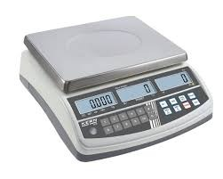
Balance Cholet : Configuration et paramétrage de tares dans la balance.
Vie d'Entreprise & Gestion de Projet
Schéma Direction Ticket
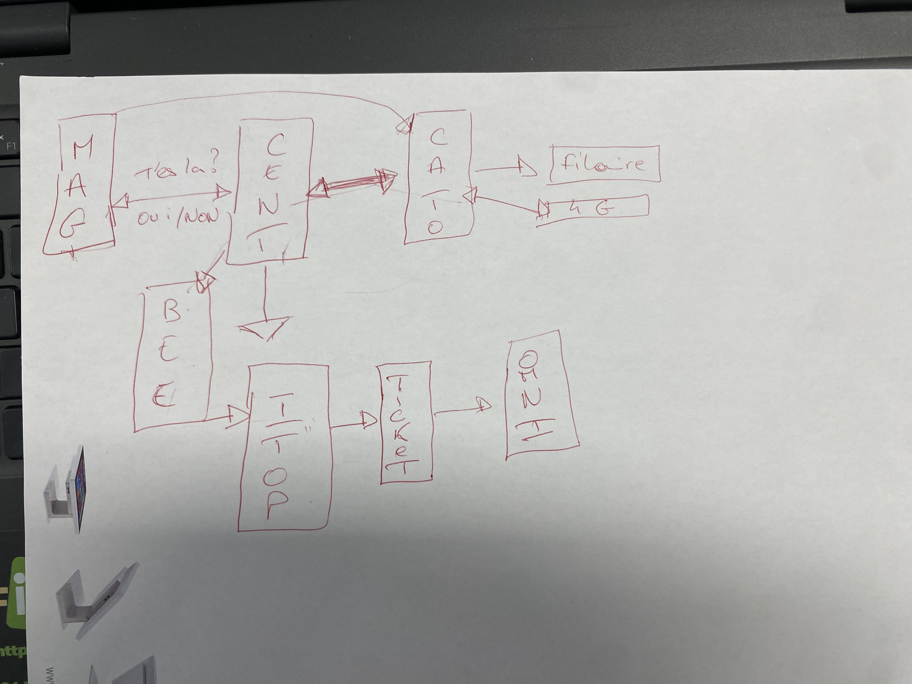
🗺️ Schématisation et flux : Étude et réalisation de schémas explicatifs (comme celui de la direction des tickets) pour modéliser les processus informatiques et le parcours des incidents au sein du support.
Présentation de Maquettes (Teltonika)
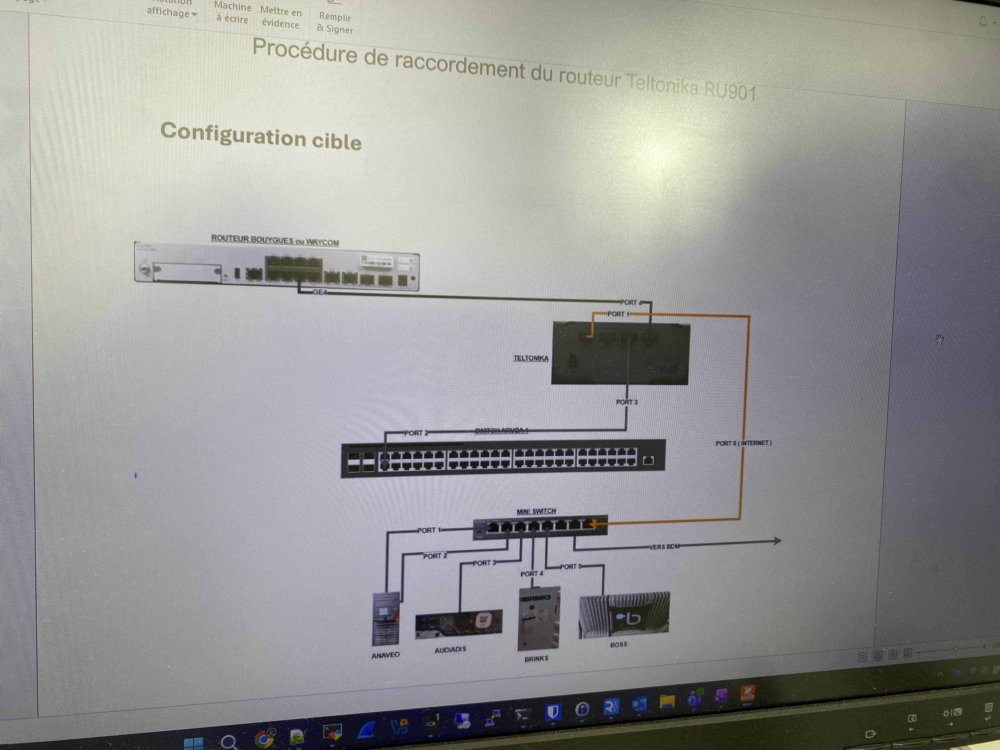
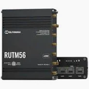
📡 Boîtier Teltonika RUTM56 : Ce routeur cellulaire industriel 5G/4G haute performance est conçu pour fournir une connectivité réseau ininterrompue et sécurisée.
- Haute résilience : Architecture à double modem offrant une bascule automatique (failover) en cas de panne réseau.
- Performances critiques : Destiné aux environnements exigeants (IoT, M2M, retail) pour garantir un accès constant aux applications d'entreprise.
- Rôle en maquettage : Ces boîtiers sont au cœur des architectures réseau testées en maquette pour moderniser et sécuriser les communications des sites distants.
Conclusion
🎤 (Présentation orale lors de la soutenance)